Show the code
library(dbscan)
library(GGally)
library(here)
library(ISLR2)
library(knitr)
library(tidyverse)Send comments to: Tony T (tthrall)
05:11 Tue 30-Dec-2025
When we encounter a new data set with many variables, our first challenge is simplification. With two or three variables, we can make scatterplots. But what about ten variables? Fifty? We cannot visualize high-dimensional data directly, so we need other strategies.
Clustering offers one such strategy: form groups of observations that have similar profiles across many variables, then explore these groups. This approach is firmly in the spirit of exploratory data analysis (EDA). We are not testing hypotheses or optimizing a loss function against known labels; we are looking for unanticipated patterns in the data.
In machine learning terminology, clustering is an example of unsupervised learning: algorithms that seek structure in data without the benefit of a response variable or observation labels. Most unsupervised methods are designed for high-dimensional settings where direct visualization fails.
Clustering shares EDA’s exploratory character:
In this chapter we’ll discuss how to group observations having similar profiles. We begin with manual grouping to build intuition, then introduce K-means clustering as an algorithmic approach, and conclude with a brief look at alternative methods.
college_vars_tbl <- tibble::tibble(
var_name = names(college),
) |>
dplyr::mutate(
dscr = dplyr::case_when(
var_name == "college_name" ~
"Name of the college or university",
var_name == "Private" ~
"No or Yes indicating private or public",
var_name == "Apps" ~
"Number of applications received",
var_name == "Accept" ~
"Number of applications accepted",
var_name == "Enroll" ~
"Number of new students enrolled",
var_name == "Top10perc" ~
"Pct. new students from top 10% of H.S. class",
var_name == "Top25perc" ~
"Pct. new students from top 25% of H.S. class",
var_name == "F.Undergrad" ~
"Number of fulltime undergraduates",
var_name == "P.Undergrad" ~
"Number of parttime undergraduates",
var_name == "Outstate" ~
"Out-of-state tuition",
var_name == "Room.Board" ~
"Room and board costs",
var_name == "Books" ~
"Estimated book costs",
var_name == "Personal" ~
"Estimated personal spending",
var_name == "PhD" ~
"Pct. of faculty with PhD's",
var_name == "Terminal" ~
"Pct. of faculty with terminal degree",
var_name == "S.F.Ratio" ~
"Student/faculty ratio",
var_name == "perc.alumni" ~
"Pct. alumni who donate",
var_name == "Expend" ~
"Instructional expenditure per student",
var_name == "Grad.Rate" ~
"Graduation rate"
)
)To illustrate ideas we’ll use data about US universities and colleges from 1995, described in the book, An Introduction to Statistical Learning with applications in R (ISLR). The data are recorded within the R package ISLR2 as ISLR2::College. From the R command help("College") we see that the data consist of 777 observations (data rows), and obtain the following description of the variables (data columns).
| variable | description |
|---|---|
| college_name | Name of the college or university |
| Private | No or Yes indicating private or public |
| Apps | Number of applications received |
| Accept | Number of applications accepted |
| Enroll | Number of new students enrolled |
| Top10perc | Pct. new students from top 10% of H.S. class |
| Top25perc | Pct. new students from top 25% of H.S. class |
| F.Undergrad | Number of fulltime undergraduates |
| P.Undergrad | Number of parttime undergraduates |
| Outstate | Out-of-state tuition |
| Room.Board | Room and board costs |
| Books | Estimated book costs |
| Personal | Estimated personal spending |
| PhD | Pct. of faculty with PhD’s |
| Terminal | Pct. of faculty with terminal degree |
| S.F.Ratio | Student/faculty ratio |
| perc.alumni | Pct. alumni who donate |
| Expend | Instructional expenditure per student |
| Grad.Rate | Graduation rate |
Clustering algorithms construct groups of observations based solely on statistical information obtained from a given data set, with no reliance on the meaning or importance of the data variables.
A complementary way to form groups is to use so-called “grouping variables” that we select or construct from the data. Often, the grouping variables are evident from the questions we’re trying to answer, e.g., to compare spending patterns among different socio-economic groups.
When we want to construct groups (clusters) of observations as a means of exploring the data, we should consider what would make one grouping (clustering) more or less effective than another for this purpose. We’ll return to this point.
To help us consider the goals and criteria of clustering (grouping), let’s return to the US college data and choose a few variables with which to group the data.
Consider the distinction between more expensive versus less expensive schools as indicated by variable Expend (instructional expenditure per student). We might ask, “Are the more expensive schools able to attract more of the top students?” So let’s also use the variable Top10perc (percent of new students coming from the top 10% of their high school class). We’ll simply split each variable at its median value, creating two binary variables, which we’ll use as our grouping variables.
Before proceeding, let’s examine the distribution of these variables via density estimates and a scatter plot.
# split selected variables at their median value
college_factors <- college |>
dplyr::mutate(
top_10_fct = Top10perc < median(Top10perc),
expend_fct = Expend < median(Expend)
) |>
# for binary factors above, re-code (T, F) to ("lwr", "upr")
dplyr::mutate(dplyr::across(
.cols = c(top_10_fct, expend_fct),
.fns = ~ dplyr::if_else(.x, "lwr", "upr")
)) |>
# label each group with a bitcode
dplyr::mutate(
top_10_lbl = dplyr::if_else(top_10_fct == "lwr", 0L, 1L),
expend_lbl = dplyr::if_else(expend_fct == "lwr", 0L, 1L),
grp_lbl = paste0("g_", top_10_lbl, expend_lbl)
) |>
# remove redundant labeling vars
dplyr::select(- top_10_lbl, - expend_lbl)
# record the median values
top_10_mid <- median(college_factors$Top10perc)
expend_mid <- median(college_factors$Expend)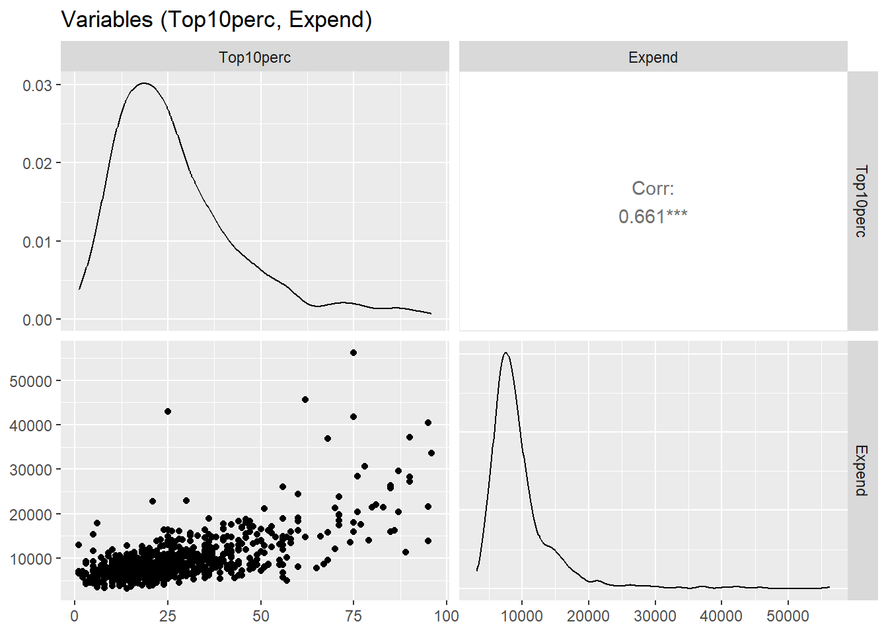
Top10perc and Expend
We see that Top10perc and Expend are positively correlated, and have relatively few departures from a monotonic relationship. Also note that Expend is measured (in US dollars) on a very different scale from Top10perc.
Now let’s look at the two variables more closely, one at a time.
g_top_10 <- college_factors |>
ggplot2::ggplot(mapping = ggplot2::aes(x = Top10perc)) +
ggplot2::geom_histogram() +
ggplot2::geom_vline(
xintercept = top_10_mid, linewidth = 2, colour = "red"
) +
ggplot2::labs(
title = "% of new students from top 10% in their HS",
subtitle = "(vertical line at median)"
)
g_top_10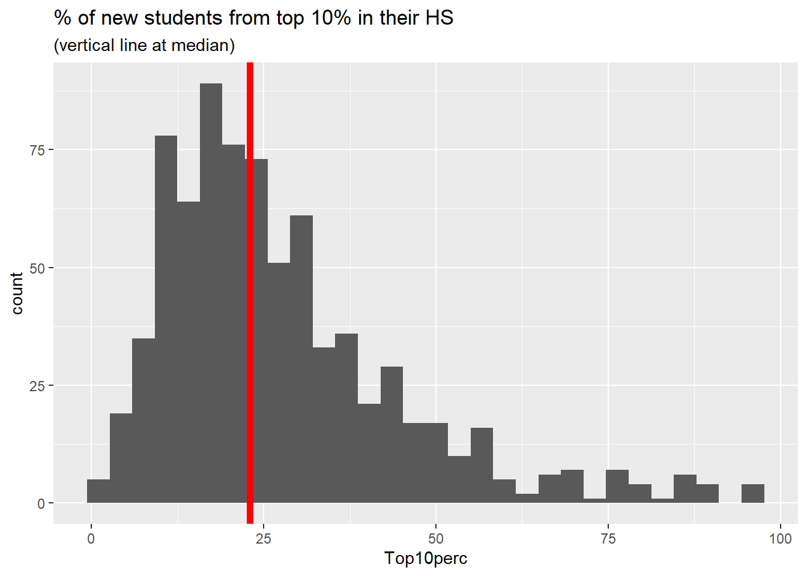
g_Expend <- college_factors |>
ggplot2::ggplot(mapping = ggplot2::aes(x = Expend)) +
ggplot2::geom_histogram() +
ggplot2::geom_vline(
xintercept = expend_mid, linewidth = 2, colour = "red"
) +
ggplot2::labs(
title = "Instructional expenditure per student",
subtitle = "(vertical line at median)"
)
g_Expend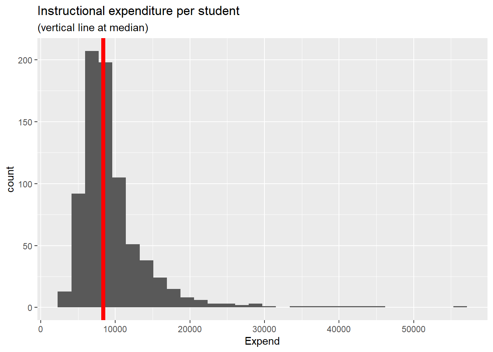
The figures above show decent variation on either side of the median value. Therefore cutting each variable at its median value seems reasonable, as long as we bear in mind that each distribution has a right tail (a quite long tail for Expend).
For each of the variables shown we create a binary variable having two levels, “lwr” and “upr”, meaning an observation is either below the median value, or else is no less than the median value. We then form 4 groups, each a combination of levels of the 2 binary variables, which we label \(g_{00}, g_{01}, g_{10}, g_{11}\) to denote the binary factors based on Top10perc, and Expend (in that order), with {“lwr”, “upr”} coded as {0, 1}.
To check this grouping of the data let’s first select the variables from which we defined the 4 groups and examine the scatter diagram, now using the color and shape of each data point to distinguish the different groups.
g_top_10_Expend <- college_factors |>
ggplot2::ggplot(mapping = ggplot2::aes(
x = Top10perc, y = Expend,
colour = grp_lbl, shape = grp_lbl
)) +
ggplot2::scale_shape_manual(values = 0:3) +
ggplot2::geom_point() +
ggplot2::labs(
title = "(Top10perc, Expend)",
subtitle = "grouped by binary versions of the two variables"
)
g_top_10_Expend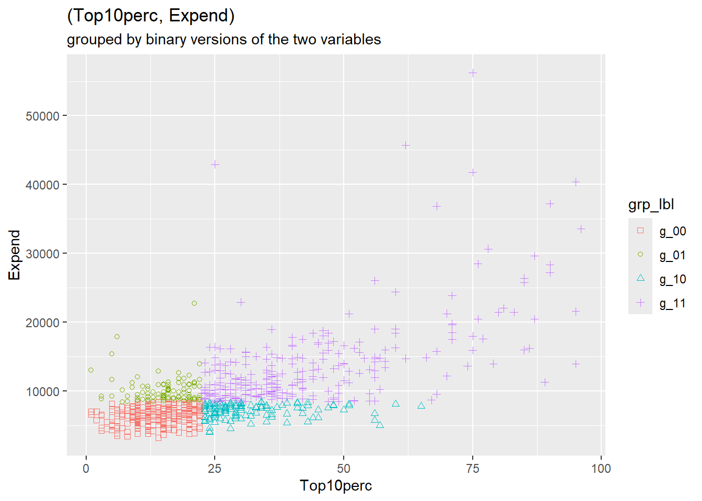
The figure above confirms that we have constructed the binary grouping variables as we intended.
The table below shows the mean per group of the underlying grouping variables.
Note: we’ve calculated the mean per group of all the numeric variables. We’ll return to those calculations in the next section.
means_per_grp <- college_factors |>
# remove original non-numeric variables
dplyr::select(- college_name, - Private) |>
# reduce grouping variables to just grp_lbl
dplyr::select(- top_10_fct, - expend_fct) |>
# vector of mean values per group
dplyr::summarise(dplyr::across(
.cols = tidyselect::everything(),
.fns = ~ mean(.x, na.rm = TRUE)
),
# grouping variable
.by = "grp_lbl",
# group size: number of original data rows per group
count = n()
) |>
dplyr::arrange(grp_lbl)Top10perc, Expend): mean values per group
| group | # obs | Top10perc | Expend |
|---|---|---|---|
| g_00 | 264 | 14.0 | 6371.7 |
| g_01 | 102 | 15.3 | 10081.8 |
| g_10 | 124 | 31.8 | 7078.1 |
| g_11 | 287 | 42.6 | 13650.9 |
In the context of clustering algorithms, groups are not given but are rather to be calculated from the data. But under what criteria? Broadly speaking we want the points (each an observation of several numeric variables) to be close together within each cluster (group), and we want the clusters to be well separated from one another.
So how well do the groups constructed above perform against these criteria? We want points within each cluster (group) to be close to one another, but how should we measure distance between points? Euclidean distance springs to mind, but there is a catch: the numeric variables are recorded on differing scales.
The following table shows the range (minimum, maximum) of each numeric variable in the college data.
# calculate range of each numeric variable
college_ranges <- college_factors |>
# remove original non-numeric variables
dplyr::select(- college_name, - Private) |>
# remove grouping variables
dplyr::select(- top_10_fct, - expend_fct, - grp_lbl) |>
dplyr::summarise(dplyr::across(
.cols = tidyselect::everything(),
.fns = list(
min = ~ min(.x, na.rm = TRUE),
max = ~ max(.x, na.rm = TRUE)
)
)) |>
tidyr::pivot_longer(
cols = everything(),
names_to = c("var", ".value"),
names_pattern = "(.*)_(.*)"
) |>
dplyr::mutate(range = max - min) |>
dplyr::arrange(desc(range))| variable | min | max | range |
|---|---|---|---|
| Expend | 3186 | 56233 | 53047 |
| Apps | 81 | 48094 | 48013 |
| F.Undergrad | 139 | 31643 | 31504 |
| Accept | 72 | 26330 | 26258 |
| P.Undergrad | 1 | 21836 | 21835 |
| Outstate | 2340 | 21700 | 19360 |
| Personal | 250 | 6800 | 6550 |
| Enroll | 35 | 6392 | 6357 |
The financial variables and enrollment counts range into the tens of thousands, whereas the percentages merely range from 0 to 100. If we compute Euclidean distances using raw values, the high-range variables will dominate. A difference of 1,000 in Apps would overwhelm a difference of 10 in Grad.Rate, even though both might represent meaningful distinctions.
This issue can be addressed by standardizing each numeric variable: subtract the overall mean and divide by the standard deviation. The result is a z-score:
\[z_j = \frac{x_j - \bar{x}_j}{s_j}\]
After standardization, all variables have mean 0 and standard deviation 1. A 1-unit difference in any standardized variable represents one standard deviation—a comparable “statistical distance” across all variables.
# convert numeric data into standard units (z-scores)
college_z_scores <- college_factors |>
# remove original non-numeric variables
dplyr::select(- college_name, - Private) |>
# grouping variables: use only grp_lbl
dplyr::select(- top_10_fct, - expend_fct) |>
# standardize numeric variables
dplyr::mutate(across(
.cols = - grp_lbl,
.fns = ~ (.x - mean(.x))/sd(.x)
))
# count numeric variables (exclude grp_lbl)
n_z_score_vars <- ncol(college_z_scores) - 1LThe code below demonstrates the z-score transformation:
Having standardized the college numeric variables we now calculate Euclidean distances. That is, within each group we calculate the distance of each point to the group mean vector. This vector of point-minus-mean is referred to as “error” (more precisely, “mean deviation”) in statistical parlance. We calculate the squared Euclidean length of this vector, and sum these squared distances across all points in the group. The result is called the (within-group) sum of squared errors (SSE). Here are the calculated SSE values (and related statistics) per group.
# compute z-score means and std-devs per group
# number of observations per group as a data frame
coll_counts_per_grp <- college_z_scores |>
dplyr::summarise(
.by = grp_lbl,
count = n()
) |>
dplyr::arrange(grp_lbl) |>
tibble::column_to_rownames("grp_lbl")
coll_z_means_per_grp <- college_z_scores |>
dplyr::summarise(
.by = grp_lbl,
dplyr::across(
.cols = tidyselect::everything(),
.fns = ~ mean(.x, na.rm = TRUE)
)
) |>
dplyr::arrange(grp_lbl)
coll_z_sds_per_grp <- college_z_scores |>
dplyr::summarise(
.by = grp_lbl,
dplyr::across(
.cols = tidyselect::everything(),
.fns = ~ sd(.x, na.rm = TRUE)
)
) |>
dplyr::arrange(grp_lbl)
# transpose coll_z_sds_per_grp
grp_z_sds_per_var <- coll_z_sds_per_grp |>
tibble::column_to_rownames("grp_lbl") |>
t() |>
tibble::as_tibble(rownames = "var")
grp_z_ss <- grp_z_sds_per_var |>
# (RMSE per var) to (MSE per var)
dplyr::mutate( dplyr::across(
.cols = - var,
.fns = ~ .x^2
)) |>
# (MSE per var) to (SSE per var)
dplyr::mutate(
g_00 = g_00 * (-1 + coll_counts_per_grp[["g_00", "count"]]),
g_01 = g_01 * (-1 + coll_counts_per_grp[["g_01", "count"]]),
g_10 = g_10 * (-1 + coll_counts_per_grp[["g_10", "count"]]),
g_11 = g_11 * (-1 + coll_counts_per_grp[["g_11", "count"]])
) |>
# sum (SSE per var) across vars
dplyr::summarise(dplyr::across(
.cols = - var,
.fns = ~ sum(.x, na.rm = TRUE)
)) |>
# transpose to facilitate summing across groups
tidyr::pivot_longer(
cols = everything(),
names_to = "group",
values_to = "SSE"
) |>
# calculate (count, df, MSE, RMSE) per group
dplyr::mutate(
count = coll_counts_per_grp [, "count"],
df = count - n_z_score_vars,
MSE = SSE / df,
RMSE = sqrt(MSE)
) |>
dplyr::select(
group, count, df, RMSE, MSE, SSE
)
# within sum of squares (across groups)
grp_z_ss_all <- sum(grp_z_ss$SSE, na.rm = TRUE)| group | count | df | RMSE | MSE | SSE |
|---|---|---|---|---|---|
| g_00 | 264 | 247 | 3.2 | 10.1 | 2493.5 |
| g_01 | 102 | 85 | 4.0 | 16.3 | 1386.6 |
| g_10 | 124 | 107 | 3.8 | 14.6 | 1560.9 |
| g_11 | 287 | 270 | 4.3 | 18.5 | 4992.3 |
The columns of the table are as follows.
The RMSE (root mean squared error) is a measure of the typical length of the point-center distances within each group
The sum of SSE across groups (the “total within-group SSE”) turns out to be 10433. This value serves as a reference point for other groupings (clusterings) of observations.
We’ll start our discussion of clustering using a function in the R stats package, namely stats::kmeans(). The function requires us to specify either the desired number \(K\) of clusters (groups) of observations to be formed, or else to provide an initial set of \(K\) cluster centers. If we merely provide the desired number \(K\) of clusters, kmeans() randomly selects \(K\) data rows (observations) as the initial set of cluster centers.
Given a set of cluster centers the algorithm iteratively searches for a better set, meaning a set having a smaller “within-cluster sum of squares”. In broad terms, this is done in two steps.
Convergence criteria: For each cluster the algorithm adds up the (point, center) squared distances. Those \(K\) sums of squares per cluster are summed across clusters to form the “total within-cluster sum of squares (WCSS)” (previously referred to as the “total within-group SSE”). In addition the algorithm records the grand mean vector, the average across the entire data set and forms a weighted sum of the squared (cluster-center, grand-mean) Euclidean distances, which is called the “between-cluster sum of squares (BCSS)”.1 The algorithm concludes the search when cluster-membership no longer changes, or when the decrease in WCSS is sufficiently small.
We now provide the kmeans() function with cluster centers in the form of the group means calculated above.2
The resulting clusters are shown in the scatter diagrams below, where for purposes of comparison we have projected the clusters onto the grouping variables we previously adopted.
# to ensure reproducibility, set random seed
set.seed(42) # nod to Hitchhiker's Guide to the Galaxy
# use college_z_means_per_grp as initial cluster centers
m_kmeans_ctrs <- college_z_scores |>
# remove grp_lbl
dplyr::select(- grp_lbl) |>
stats::kmeans(
centers = coll_z_means_per_grp |>
# remove grp_lbl
dplyr::select(- grp_lbl)
)
# record total within-cluster sum of squares
km_wcss <- m_kmeans_ctrs$tot.withinssg_top_10_Expend_kmc <- college_km_ctrs |>
dplyr::mutate(cluster = forcats::as_factor(cluster)) |>
ggplot2::ggplot(mapping = ggplot2::aes(
x = Top10perc, y = Expend,
colour = cluster, shape = cluster
)) +
ggplot2::scale_shape_manual(values = 0:3) +
ggplot2::geom_point() +
ggplot2::labs(
title = "(Top10perc, Expend)",
subtitle = "clusters identified by kmeans()"
)
g_top_10_Expend_kmc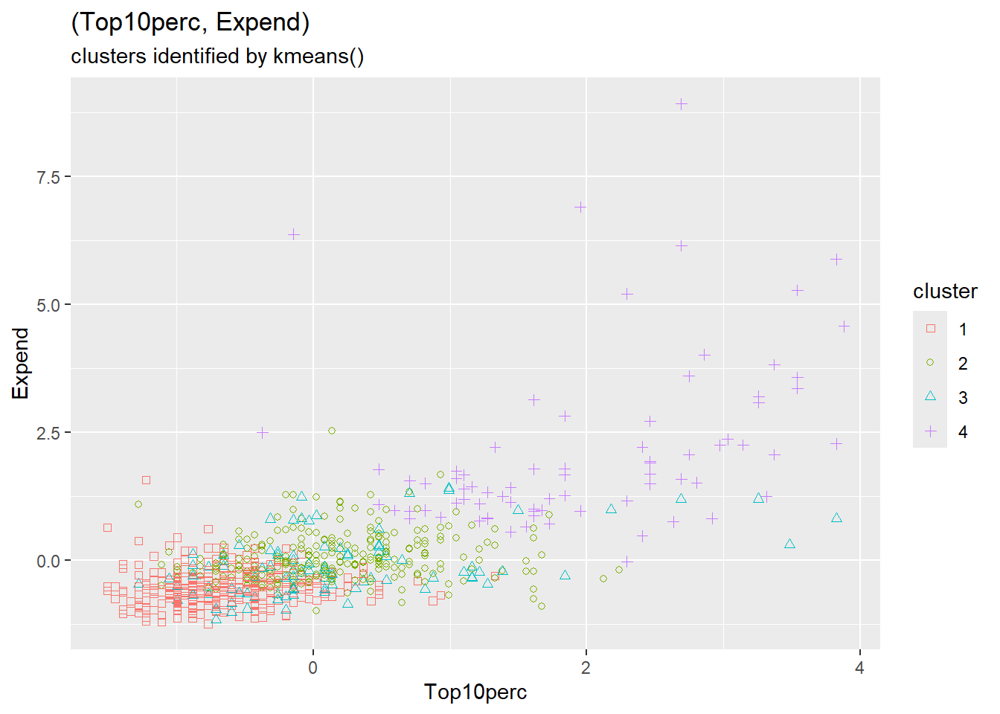
Top10perc, Expend): clusters identified by kmeans()
The figure above shows that the kmeans() clusters are distinct from but similar to the groups formed above whose mean values served as initial cluster centers. Here are the number of observations belonging to each combination of \(g_{x,y}\) group and kmeans() cluster.
grp_lbl
cluster g_00 g_01 g_10 g_11
1 224 49 50 9
2 22 41 48 164
3 18 11 26 38
4 0 1 0 76Some clusters align well with manual groups (e.g., clusters largely contained within a single group), while others split across groups. This comparison helps us understand whether the algorithm is finding structure similar to what we might construct manually.
The table above provides in more detail the similarities and differences between the initial (grp_lbl) and final (cluster) clusters from kmeans(). The table can be represented and summarized by Jaccard’s measure of the similarity of two finite sets, \((A, B)\), namely:
\[ \begin{align} J(A, B) &= \frac{\left| A \cap B \right|}{\left| A \cup B \right|} \end{align} \qquad(3.1)\]
Letting \((A, B)\) denote the respective (row, column) of each cell in the above table, we obtain the following table of Jaccard similarity measures of each (cluster, grp_lbl) combination.
| cluster | g_00 | g_01 | g_10 | g_11 |
|---|---|---|---|---|
| 1 | 0.60 | 0.13 | 0.12 | 0.01 |
| 2 | 0.04 | 0.12 | 0.14 | 0.41 |
| 3 | 0.05 | 0.06 | 0.14 | 0.11 |
| 4 | 0.00 | 0.01 | 0.00 | 0.26 |
The weighted average (weighted by cell count) of these similarity values is 0.33.
The Jaccard index is useful for comparing clusterings:
The two figures below show the range of point-center distances for the original grouping and for the kmeans() clustering. In the latter case, points are closer to the mean of the cluster, as can be seen by comparing the scale of the two figures. The total within-cluster sum of squares is 7434 for kmeans() compared to 10433 for the original grouping.
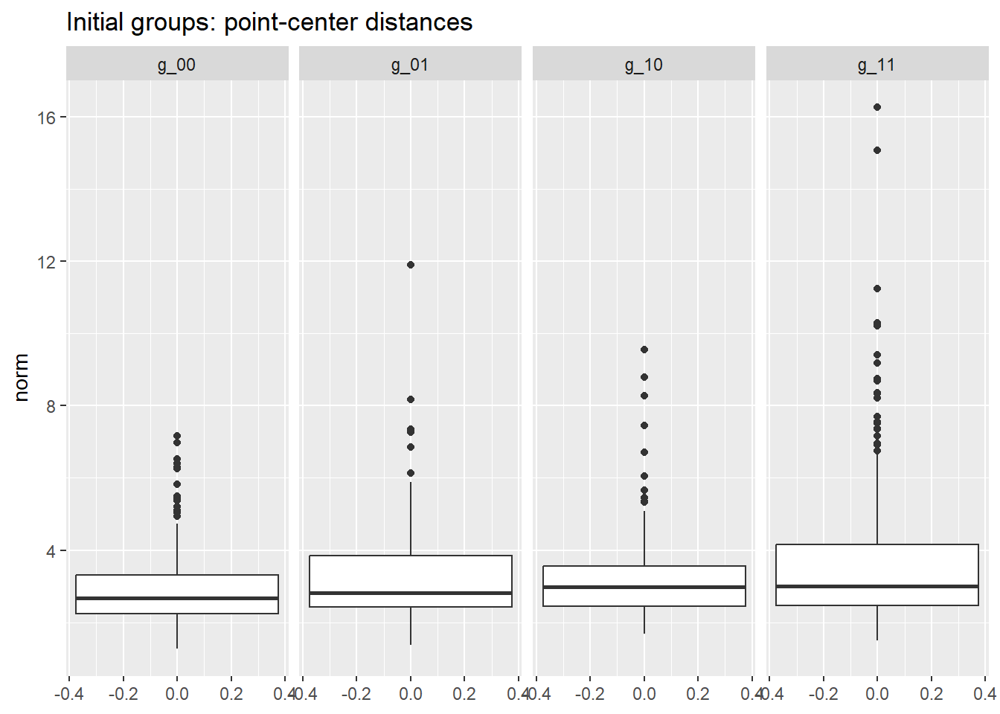
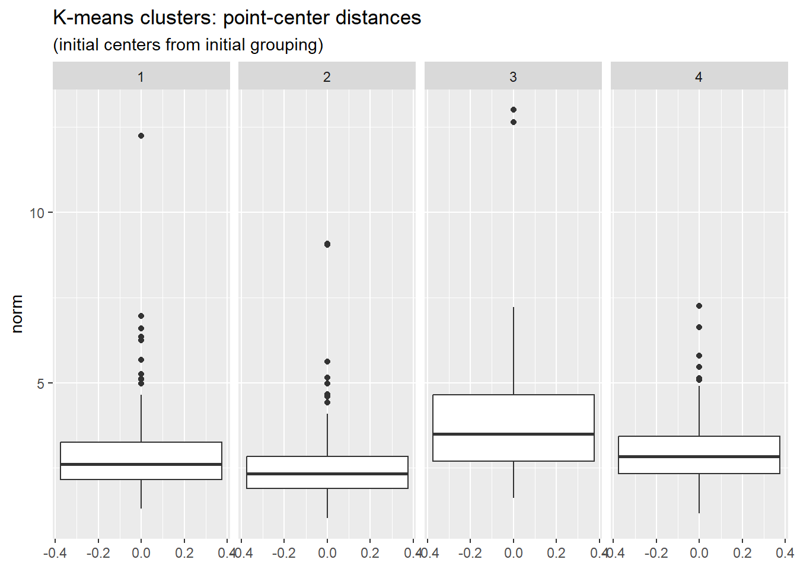
Let’s run kmeans() again, this time specifying only the desired number \(K\) of clusters. The function will then select \(K\) rows of the data at random as the initial set of cluster centers. In any case, no matter how the initial cluster centers may be selected, that selection influences the subsequent iterative formation of clusters.
To make the algorithm more robust we specify parameter nstart, the number times to run kmeans(), each using a distinct random selection of data rows as initial cluster centers. For each run the algorithm computes WCSS (the total within-cluster sum of squares). Once nstart runs have been completed, the run having the smallest value of WCSS is reported to the user. A rule of thumb is to set nstart to a value between 20 and 50.
We now run kmeans() again, setting \(K = 4\) and nstart = 25. For purposes of comparison with previous results, here is a projection of the resulting 4 clusters onto a (Top10perc, Expend) scatter diagram.
The key code for running K-means with multiple random starts:
# K-means with multiple random starts for robustness
kmeans_result <- college_z_scores |>
dplyr::select(-grp_lbl) |>
stats::kmeans(
centers = 4, # number of clusters
nstart = 25 # number of random starts
)
# Extract results
kmeans_result$cluster # cluster assignments
kmeans_result$centers # cluster centroids
kmeans_result$tot.withinss # total within-cluster SSg_top_10_Expend_nstart <- college_z_scores |>
dplyr::mutate(
cluster = m_kmeans_nstart$cluster |> forcats::as_factor()
) |>
ggplot2::ggplot(mapping = ggplot2::aes(
x = Top10perc, y = Expend,
colour = cluster, shape = cluster
)) +
ggplot2::scale_shape_manual(values = 0:3) +
ggplot2::geom_point() +
ggplot2::labs(
title = "(Top10perc, Expend)",
subtitle = "identified by kmeans cluster (nstart = 25)"
)
g_top_10_Expend_nstart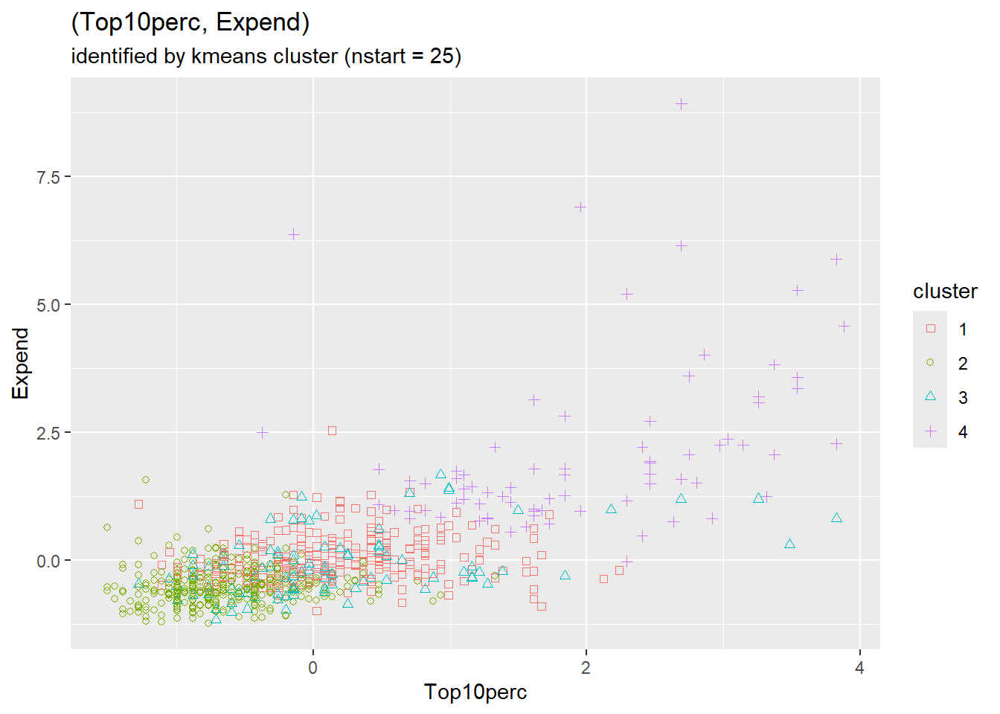
Interestingly, we again see strong separation of clusters associated with the values of Top10perc and Expend.
The table below shows the number of observations in each combination of the original grouping and the new kmeans() clusters.
grp_lbl
cluster g_00 g_01 g_10 g_11
1 21 40 47 161
2 225 50 51 11
3 18 11 26 39
4 0 1 0 76As with the previous kmeans() clusters, we again see two of the clusters well aligned with groups \(g_{00}\) and \(g_{11}\), respectively.
The similarity of the current clusters with the previous clusters prompts us to examine the number of observations in each pair (old, new) clusters, distinguishing the two as (cl_group, cl_nstart).
nstart
cl_nstart
cl_group 1 2 3 4
1 0 332 0 0
2 269 5 1 0
3 0 0 93 0
4 0 0 0 77We see that the new clusters are essentially a relabeling of the previous clusters. The figure below of new point-center distances is essentially the same as the previous figure with the first two clusters swapped. In fact the total within-cluster sum of squares is unchanged from the previous clustering.
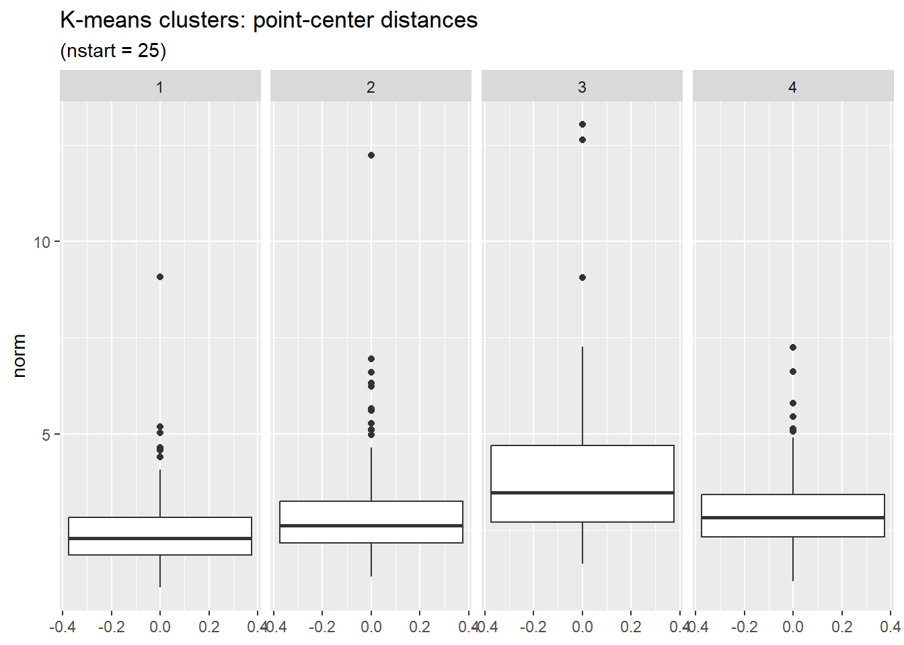
So far in our application of kmeans() to the college data we have set \(K = 4\). How would the results change with different choices for the value of \(K\)? Breaking the observations into smaller but more numerous clusters should in general reduce the total within-cluster sum of squares (WCSS), but we can also expect to reach a point of diminishing returns.
For the college data, the figure below shows how WCSS decreases as \(K\) increases.
The code to generate the elbow plot:
# Compute WCSS for different values of K
wcss_by_k <- tibble::tibble(k = 2:12) |>
dplyr::mutate(
wcss = purrr::map_dbl(k, ~ {
stats::kmeans(college_z, centers = .x, nstart = 20)$tot.withinss
})
)
# Plot WCSS vs K (elbow plot)
ggplot2::ggplot(wcss_by_k, ggplot2::aes(x = k, y = wcss)) +
ggplot2::geom_line() + ggplot2::geom_point() +
ggplot2::labs(x = "Number of clusters (K)", y = "Within-cluster SS")# run kmeans on college data for successive values of k
# to ensure reproducibility, set random seed
set.seed(42)
k_max <- 12L
nstart_per_k <- 20L
mk_tbl <- tibble::tibble()
coll_z <- college_z_scores |>
# use only z-scores of original numeric variables
dplyr::select(- grp_lbl)
for (k in 2:k_max) {
m_tmp <- coll_z |>
kmeans(centers = k, nstart = nstart_per_k)
mk_tbl <- mk_tbl |>
dplyr::bind_rows(
tibble::tibble(
k = k,
wcss = m_tmp$tot.withinss)
)
}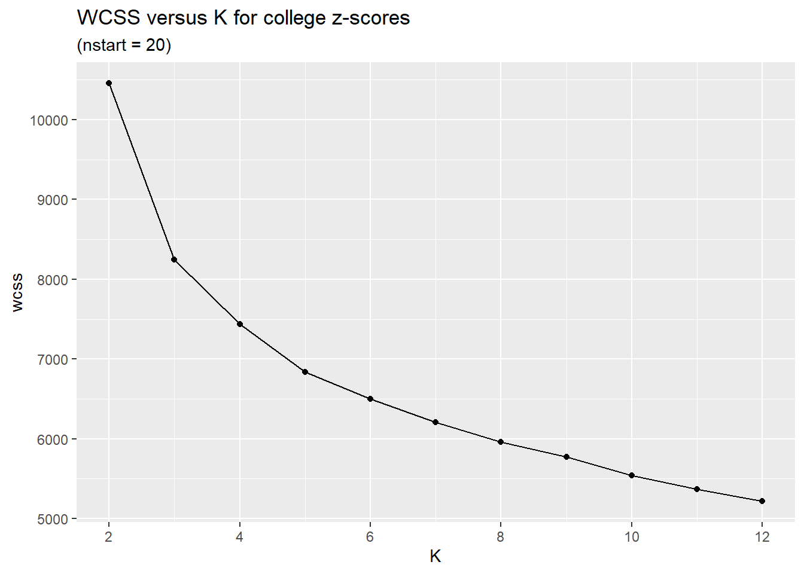
In general, smaller values of \(K\) are more interpretable. Based on the figure above we might set \(K\) to be 4 or 5. This is a judgement call that depends on the circumstances and goals of one’s project.
Look for an “elbow” in the plot—a point where the rate of decrease in WCSS sharply levels off. Before the elbow, adding clusters captures real structure. After the elbow, we see diminishing returns.
The elbow is often subjective; domain knowledge and interpretability should also guide your choice of \(K\).
Clustering is not complete until we interpret what the clusters mean. The algorithm found groups—now we ask what characterizes each one.
# Add cluster assignments to original data
college_with_clusters <- college |>
dplyr::mutate(cluster = factor(m_kmeans_nstart$cluster))
# Compute cluster profiles
cluster_profiles <- college_with_clusters |>
dplyr::group_by(cluster) |>
dplyr::summarise(
n = n(),
Pct_Private = mean(Private == "Yes") * 100,
Top10perc = mean(Top10perc),
Expend = mean(Expend),
Grad.Rate = mean(Grad.Rate),
F.Undergrad = mean(F.Undergrad),
Outstate = mean(Outstate),
.groups = "drop"
)| Cluster | n | % Private | Top10% | Expend | Grad Rate | Enrollment | Outstate |
|---|---|---|---|---|---|---|---|
| 1 | 269 | 95 | 31 | 9975 | 74 | 1820 | 12394 |
| 2 | 337 | 66 | 16 | 7025 | 56 | 2307 | 7880 |
| 3 | 94 | 12 | 31 | 9204 | 59 | 14514 | 8134 |
| 4 | 77 | 97 | 62 | 20651 | 85 | 3162 | 17639 |
Review of these profiles and additional variable summaries suggests the following interpretations:
The specific cluster numbers may vary depending on random seed, but typical patterns in college data include:
Top10perc, high Expend, high Outstate, mostly private—likely elite private institutionsF.Undergrad, lower Expend per student, lower Outstate—flagship state universitiesTop10perc, lower Expend, lower graduation ratesDoes this match your domain knowledge about the US higher education landscape?
This interpretive step is essential. Without it, clustering remains a mathematical exercise. With it, clustering becomes a tool for generating insights and hypotheses.
The interpretive step exemplifies the dual aims of data analysis introduced in the book’s preface. The algorithm provides decision support: it assigns observations to groups. But the assignment is useful only when accompanied by understanding: what characterizes each group, and why might these distinctions matter? Clustering without interpretation is computation; clustering with interpretation is analysis.
Clustering methods are an active area of research. The K-means algorithm, first introduced in the 1930s, has the longest history. More recent methods can be categorized along the following lines.
Soft versus Hard: “Hard” clustering assigns each data point to a single cluster. “Soft” clustering assigns to each point a finite probability distribution of cluster membership.
Agglomerative versus Divisive: methods define the initial partition of the data into clusters in opposite ways. Agglomerative clustering initially defines each data point to be a cluster, and then merges clusters. Divisive clustering initially defines the entire data set to be a single cluster, and then breaks up this and subsequent clusters into smaller clusters.
Hierarchical or not: Instead of a partition, hierarchical methods create a hierarchy of parent (superset) and child (subset) clusters.
Centroid-based versus Density-based: K-means and other centroid-based methods identify a cluster of points with the mean, median, or other central measure of the points in the cluster. Density-based methods find areas having a high density of points.
Some methods of note are DBSCAN (Density Based Spatial Clustering of Applications with Noise) and HDBSCAN (a hierarchical version of DBSCAN).
Both K-means and density-based methods like DBSCAN depend on a distance (or dissimilarity) measure to determine which observations are “close.” The default is Euclidean distance (the \(L_2\) norm):
\[ d_2(\mathbf{x}, \mathbf{y}) = \sqrt{\sum_{j=1}^{p} (x_j - y_j)^2} \]
Other common choices include Manhattan distance (\(L_1\)), which sums absolute differences and is less sensitive to outliers in individual dimensions:
\[ d_1(\mathbf{x}, \mathbf{y}) = \sum_{j=1}^{p} |x_j - y_j| \]
and Chebyshev distance (\(L_\infty\)), which considers only the largest single-dimension difference:
\[ d_\infty(\mathbf{x}, \mathbf{y}) = \max_{j} |x_j - y_j| \]
The choice of distance measure affects cluster shapes and which observations are grouped together. Euclidean distance implicitly assumes that features are on comparable scales—reinforcing why standardization (z-scores) is typically applied before clustering. In high-dimensional settings, all distance measures face the “curse of dimensionality,” a phenomenon we examine in Chapter 8.
Unlike K-means, DBSCAN does not require specifying the number of clusters in advance. Instead, it finds clusters based on density—regions where points are packed closely together. Points in sparse regions are labeled as noise.
0 1
145 632 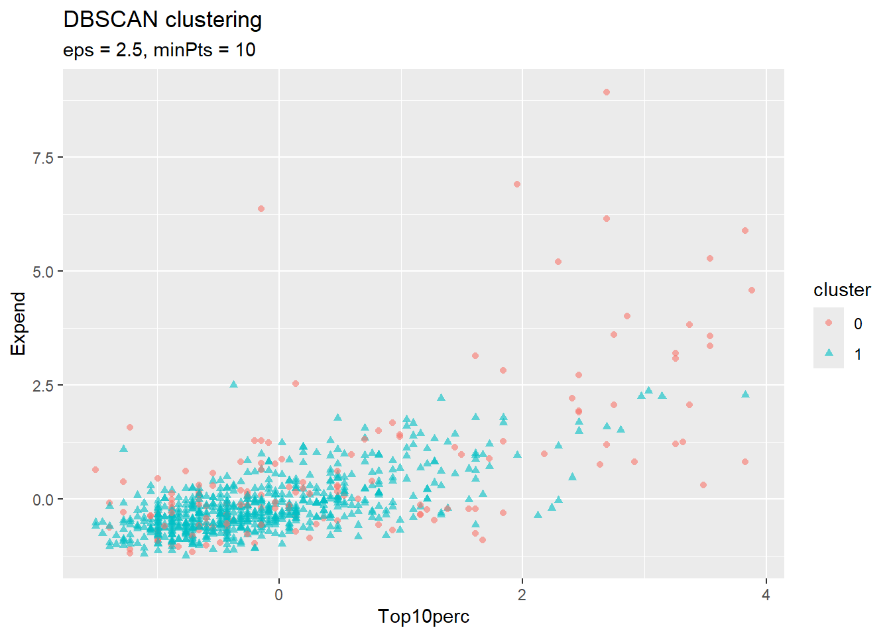
DBSCAN’s key parameters are eps (the neighborhood radius) and minPts (minimum points to form a dense region). Points not belonging to any dense region are classified as noise (cluster 0). This can be useful for identifying outliers or when clusters have irregular shapes.
eps and minPts.Clustering connects to supervised learning in several ways:
(College Data Exploration) Make your own copy of the ISLR2::College data and explore it. Consider: How many private vs. public schools are in the data? What is the range of Expend (expenditure per student) compared to Grad.Rate? Which numeric variables appear to be correlated (use GGally::ggpairs() on a subset)? Based on your domain knowledge, what groupings would you expect to find among colleges—elite vs. non-elite, large vs. small, research-focused vs. teaching-focused? What questions about colleges might clustering help answer?
(Iris Data) Submit R command help("iris") to learn about the measurements of iris flowers available in R as datasets::iris. Summarise these measurements in a graph or table, for example by applying the GGally::ggpairs() function.
(Iris K-means) Apply the K-means algorithm to the iris measurements. How do the computed clusters compare to the grouping by variable Species? Count the number of observations corresponding to each combination of cluster and Species, for example by using R function stats::xtabs().
(Wine Quality Data, optional) The eda4mlr::wine_quality dataset contains chemical measurements of wines. Apply K-means clustering to the numeric variables and interpret the resulting clusters. Do they correspond to quality ratings or wine color?
An Introduction to Statistical Learning by James, Witten, Hastie, & Tibshirani
The sum of squared (point, grand-mean) distances does not depend on any grouping (clustering) of the observations, and is called the “total sum of squares”. The between-cluster sum of squares (BCSS) equals the total sum of squares minus the within-cluster sum of squares. BCSS is also equal to a weighted sum of (cluster-center, grand-mean) squared distances.↩︎
kmeans() expects the cluster centers to be expressed as a matrix, in which each row represents a single cluster center and each column represents a “coordinate” of the cluster centers corresponding to one of the numeric variables (columns) of the data matrix.↩︎